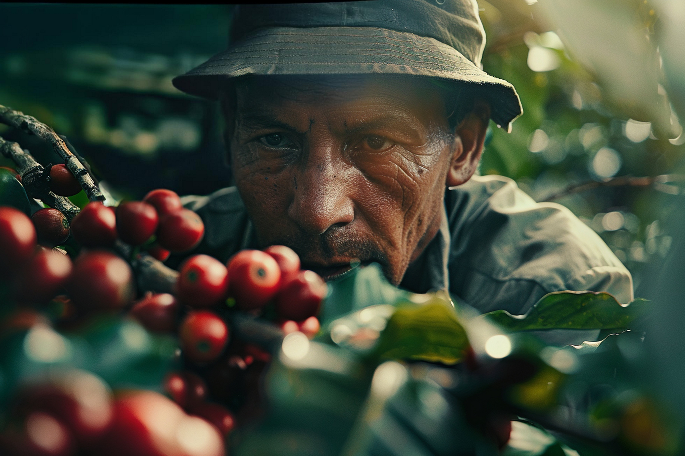
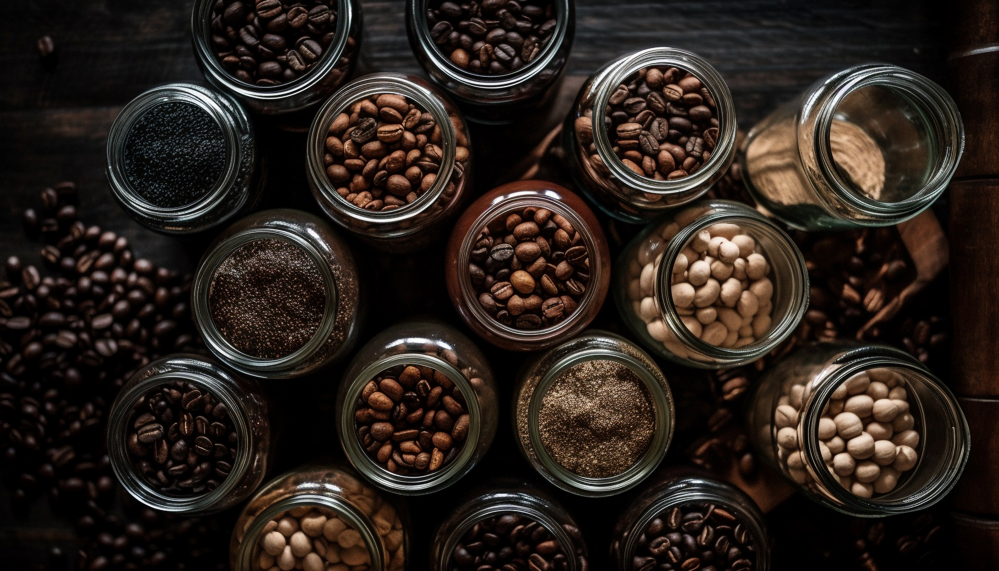

Sejarah

Biji Kopi dimulai dari wilayah Ethiopia sekitar abad ke-9, dengan legenda terkenal tentang seorang
penggembala kambing
bernama Kaldi. Menurut cerita, Kaldi memperhatikan bahwa kambing-kambingnya menjadi sangat aktif dan
energik setelah
memakan buah merah dari pohon kopi. Ia kemudian membawa buah tersebut ke seorang biarawan lokal yang
mengolahnya menjadi
minuman. Minuman ini ternyata membantu para biarawan tetap terjaga selama doa malam yang panjang.
Penemuan ini segera
menyebar ke wilayah tetangga di Semenanjung Arab, di mana kopi mulai dibudidayakan secara serius di
Yaman pada abad
ke-15.
Pada awal abad ke-16, kopi mulai menyebar ke wilayah Kekaisaran Ottoman melalui kota-kota pelabuhan
di Mekkah dan Kairo.
Di dunia Muslim, kopi dikenal sebagai "qahwa" dan digunakan secara luas, terutama dalam kegiatan
keagamaan dan diskusi
intelektual. Kedai-kedai kopi pertama, yang dikenal sebagai "qahveh khaneh", mulai muncul di
kota-kota besar seperti
Istanbul, Baghdad, dan Damaskus. Kedai-kedai ini menjadi pusat kehidupan sosial, di mana orang
berkumpul untuk
berbincang, bermain catur, dan mendengarkan musik. Kopi juga menjadi bagian penting dari ritual
sufi, digunakan untuk
membantu mereka tetap terjaga selama doa malam yang panjang.
Kopi mulai memasuki Eropa pada abad ke-17 melalui perdagangan dengan dunia Arab dan Turki. Orang
Eropa awalnya mengenal
kopi melalui pedagang Italia dan Venesia, yang kemudian memperkenalkannya ke negara-negara lain di
benua tersebut. Pada
awalnya, kopi dianggap sebagai minuman eksotis dan sering dikaitkan dengan dunia Muslim. Namun,
dengan semakin
populernya kedai-kedai kopi di kota-kota besar seperti London, Paris, dan Amsterdam, kopi menjadi
bagian integral dari
budaya sosial Eropa. Belanda kemudian memulai budidaya kopi di koloni-koloninya di Jawa, Indonesia,
pada abad ke-18,
yang menandai awal penyebaran kopi ke Amerika Tengah dan Selatan, dan pada akhirnya menjadikan
wilayah ini sebagai pusat
produksi kopi dunia.
Penamaan

Penamaan kopi berasal dari kata "qahwa" dalam bahasa Arab, yang awalnya berarti minuman atau anggur.
Istilah ini
kemudian diadopsi dalam bahasa Turki menjadi "kahve" dan akhirnya diserap ke dalam bahasa Belanda
sebagai "koffie," yang
kemudian disebarkan ke seluruh Eropa, termasuk ke Inggris dengan nama "coffee." Seiring penyebaran
kopi ke berbagai
belahan dunia, setiap budaya memberikan sentuhan unik pada penamaannya, namun akar kata tersebut
tetap merujuk pada
minuman energi yang dihasilkan dari biji buah kopi.
Sementara itu, istilah "Arabika" dan "Robusta" digunakan untuk menamai dua spesies kopi utama
berdasarkan karakteristik
botanis dan asal-usulnya. Coffee arabica mendapatkan namanya dari Semenanjung Arab, tempat kopi
pertama kali
dibudidayakan secara besar-besaran. Sedangkan Coffee canephora, yang lebih dikenal sebagai Robusta,
dinamai berdasarkan
ketahanannya terhadap kondisi tumbuh yang keras, khususnya di Afrika Barat. Nama-nama ini
mencerminkan sejarah
perjalanan kopi dari daerah asalnya hingga menjadi salah satu komoditas global paling populer.
Geografis
Biji kopi tumbuh terutama di wilayah tropis di sekitar khatulistiwa, dalam sebuah zona yang dikenal
sebagai "Sabuk Kopi" (Coffee Belt). Zona ini mencakup lebih dari 70 negara di Amerika Latin, Afrika,
dan Asia, yang memiliki iklim ideal untuk budidaya kopi. Kondisi yang diperlukan untuk pertumbuhan
optimal kopi termasuk suhu antara 18°C hingga 24°C, curah hujan yang cukup, serta tanah yang kaya
mineral. Wilayah yang paling terkenal dalam budidaya kopi adalah Amerika Selatan (terutama Brasil
dan Kolombia), Afrika Timur (seperti Ethiopia dan Kenya), serta Asia Tenggara (termasuk Indonesia
dan Vietnam). Masing-masing wilayah ini menghasilkan biji kopi dengan karakteristik rasa yang unik
karena perbedaan iklim, ketinggian, dan tanah.
Amerika Latin adalah produsen kopi terbesar di dunia, dengan Brasil memimpin produksi global. Di
Amerika Latin, kopi
biasanya ditanam di dataran tinggi, yang memberikan kondisi pertumbuhan ideal untuk varietas
Arabika. Kopi dari wilayah
ini terkenal dengan keasaman yang seimbang, rasa manis yang ringan, dan nuansa rasa cokelat, kacang,
serta buah-buahan.
Kolombia, misalnya, dikenal dengan kopi yang memiliki profil rasa cerah dan kompleks, sementara kopi
dari Brasil umumnya
memiliki tubuh yang tebal dan rasa yang lebih lembut. Kawasan Amerika Tengah, seperti Kosta Rika dan
Guatemala, juga
menghasilkan kopi dengan keasaman cerah dan rasa yang bervariasi dari buah hingga floral.
Di Afrika, terutama di Ethiopia dan Kenya, kopi tumbuh di dataran tinggi dengan kondisi tanah
vulkanik yang subur. Kopi
dari Ethiopia sering kali digambarkan sebagai kopi dengan keasaman yang tajam, aroma bunga, dan rasa
buah-buahan tropis
yang khas. Sementara kopi Kenya juga terkenal dengan profil rasa yang hidup dan terang, dengan
keasaman tinggi dan rasa
buah yang kompleks. Di Asia, Indonesia dikenal dengan produksi kopi dari pulau Sumatra, Jawa, dan
Sulawesi, yang umumnya
memiliki rasa earthy dan tubuh yang tebal. Vietnam, produsen kopi Robusta terbesar di dunia,
menghasilkan kopi dengan
rasa lebih pahit dan kandungan kafein yang tinggi, yang sering digunakan dalam kopi instan atau
campuran espresso.
Kombinasi faktor geografis seperti iklim, ketinggian, dan jenis tanah memainkan peran penting dalam
menentukan cita rasa
akhir kopi yang dihasilkan di setiap wilayah.
Jenis

Kopi memiliki beragam jenis yang menawarkan berbagai profil rasa dan karakteristik unik, tergantung
dari asal tanaman,
metode pengolahan, hingga cara penyangraiannya. Setiap jenis kopi dapat memiliki cita rasa yang
berbeda, mulai dari yang
ringan dengan keasaman cerah, hingga yang kuat dengan tubuh penuh dan rasa pahit yang dominan. Ada
kopi dengan aroma
buah-buahan yang segar, bunga, rempah-rempah, hingga rasa yang lebih dalam seperti cokelat, kacang,
atau nuansa earthy.
Kombinasi dari faktor-faktor seperti kondisi geografis, ketinggian tempat tumbuh, dan metode pasca
panen turut membentuk
kompleksitas dan kekayaan rasa yang ditawarkan oleh berbagai jenis kopi yang ada di seluruh dunia.
Arabika
Arabika adalah jenis kopi yang paling populer dan menyumbang sekitar 60-70% dari produksi kopi
dunia. Kopi Arabika
tumbuh di dataran tinggi dengan iklim yang sejuk, biasanya pada ketinggian 600-2.000 meter di
atas permukaan laut.
Kondisi ini memberikan biji kopi Arabika rasa yang lebih halus dan kompleks, dengan keasaman
yang lebih tinggi. Kopi ini
sering digambarkan memiliki rasa floral, buah-buahan, dan kadang-kadang sedikit manis. Kopi
Arabika juga dikenal
memiliki kandungan kafein yang lebih rendah dibandingkan dengan jenis kopi lainnya,
menjadikannya pilihan favorit bagi
mereka yang menginginkan kopi dengan profil rasa yang lembut dan tidak terlalu kuat.
Namun, karena kopi Arabika lebih sensitif terhadap perubahan iklim dan hama, budidayanya
memerlukan perhatian ekstra.
Tanaman kopi Arabika lebih rentan terhadap penyakit, seperti penyakit daun kopi (leaf rust),
yang bisa menghancurkan
tanaman jika tidak ditangani dengan baik. Hal ini membuat kopi Arabika lebih mahal dibandingkan
Robusta. Meskipun lebih
sulit dibudidayakan, Arabika dianggap sebagai kopi dengan kualitas terbaik dan sering kali
menjadi pilihan utama untuk
kopi-kopi premium atau single-origin yang dieksplorasi oleh para penggemar kopi.
Robusta
Robusta adalah jenis kopi kedua yang paling banyak diproduksi di dunia, terutama tumbuh di
dataran rendah dan wilayah
dengan iklim panas serta lembap. Robusta dikenal karena rasa yang lebih kuat dan cenderung
pahit, dengan keasaman rendah
dan tubuh yang lebih penuh. Kopi Robusta memiliki kandungan kafein dua kali lipat dibandingkan
Arabika, yang memberikan
sensasi lebih pahit. Kafein yang tinggi juga membuat tanaman Robusta lebih tahan terhadap hama
dan penyakit, sehingga
lebih mudah dibudidayakan dibandingkan Arabika.
Robusta sering digunakan dalam pembuatan kopi instan dan espresso, di mana kekuatannya menambah
rasa yang lebih pekat
dan tebal. Meskipun secara umum dianggap memiliki kualitas yang lebih rendah dibandingkan
Arabika karena rasanya yang
kurang kompleks, beberapa varian Robusta berkualitas tinggi, terutama yang diproses dengan baik,
dapat menawarkan rasa
yang kaya dan karakteristik unik seperti aroma cokelat atau kacang. Vietnam merupakan produsen
utama Robusta dunia, yang
banyak diekspor untuk memenuhi permintaan global.
Liberika
Liberika adalah jenis kopi yang lebih jarang ditemukan dibandingkan Arabika dan Robusta, tetapi
memiliki ciri khas yang
sangat berbeda. Kopi Liberika berasal dari Afrika Barat, khususnya Liberia, dan memiliki biji
yang lebih besar dan tidak
simetris. Kopi ini biasanya ditanam di daerah tropis yang lebih rendah dan lebih lembap, seperti
di beberapa bagian Asia
Tenggara, termasuk Filipina dan Malaysia. Rasa kopi Liberika sangat unik, dengan aroma yang
tajam dan sering kali
digambarkan sebagai smoky, woody, dan kadang-kadang sedikit floral. Rasanya lebih berani
dibandingkan Arabika, tetapi
juga kurang manis dan lebih earthy.
Meskipun kopi Liberika tidak sepopuler Arabika dan Robusta dalam perdagangan global, varietas
ini sangat penting di
beberapa pasar lokal. Di Filipina, kopi Liberika yang dikenal sebagai "kapeng barako" adalah
bagian penting dari warisan
budaya kopi lokal dan banyak digemari. Namun, karena pohon Liberika lebih besar dan memerlukan
lebih banyak ruang serta
sumber daya untuk dibudidayakan, kopi ini tidak diproduksi dalam skala yang sama dengan Arabika
atau Robusta.
Excelsa
Excelsa dulunya dianggap sebagai spesies kopi tersendiri, tetapi sekarang diklasifikasikan
sebagai varietas dari spesies
Liberika. Kopi Excelsa tumbuh terutama di Asia Tenggara dan menempati sekitar 7% dari produksi
kopi dunia. Excelsa
memiliki profil rasa yang sangat berbeda dibandingkan dengan jenis kopi lainnya. Biji kopi ini
memberikan rasa asam yang
kuat dan aroma buah-buahan yang khas, dengan tubuh yang lebih ringan. Rasa kopi Excelsa sering
digambarkan kompleks,
dengan lapisan rasa yang terus berubah dari pertama kali diseduh hingga diminum.
Excelsa sering digunakan sebagai campuran dalam kopi lain untuk memperkaya cita rasa dan
memberikan dimensi tambahan
pada kopi. Karakteristik uniknya membuat kopi Excelsa mampu memberikan keseimbangan antara rasa
asam yang tajam dan
tubuh yang ringan, yang jarang ditemukan pada jenis kopi lainnya. Meskipun jarang digunakan
sebagai single-origin,
Excelsa sangat berharga dalam industri kopi karena kemampuannya untuk meningkatkan kompleksitas
dalam campuran kopi.